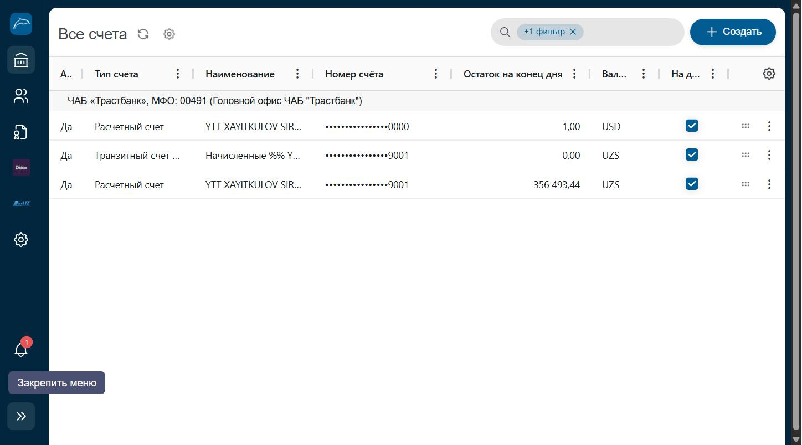

Все счета
Полный список расчётных и транзитных счетов компании, открытых в банке, с остатками на конец дня.
Где находитсяПункт «Все счета» в разделе «Банк», группа «Счета» (последний пункт группы).

Номера счетов на скриншоте частично скрыты (видны только последние 4 цифры).
Из чего состоит страница
- 1Фильтр «+1 фильтр»Позволяет добавить дополнительные условия отбора счетов (например по валюте или статусу).
- 2Кнопка «Создать»Открывает форму открытия нового счёта в банке.
- 3Таблица счетовСтолбцы: Активен, Тип счёта, Наименование, Номер счёта, Остаток на конец дня, Валюта.
- 4Чекбокс «На дашборде»Определяет, будет ли данный счёт отображаться в виджете «Мои счета» на главной странице.
- 5Меню действийИконки открывают дополнительные действия по счёту (реквизиты, история и т.д.).
Пошагово
- Откройте пункт «Все счета» в разделе «Банк».
- Просмотрите список всех открытых счетов компании и их остатки.
- Используйте фильтр, чтобы отобразить только нужные счета.
- Отметьте чекбоксы «На дашборде» для нужных счетов.
ВажноОткрытие нового счёта — операция, изменяющая состояние банковского обслуживания компании, и в рамках демонстрационного исследования интерфейса не выполнялась.